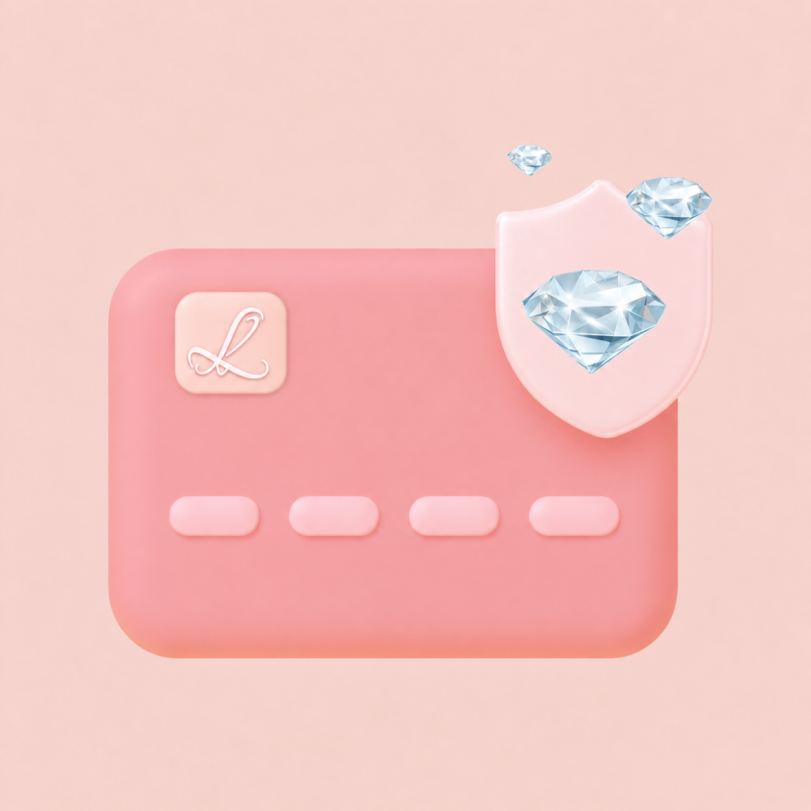
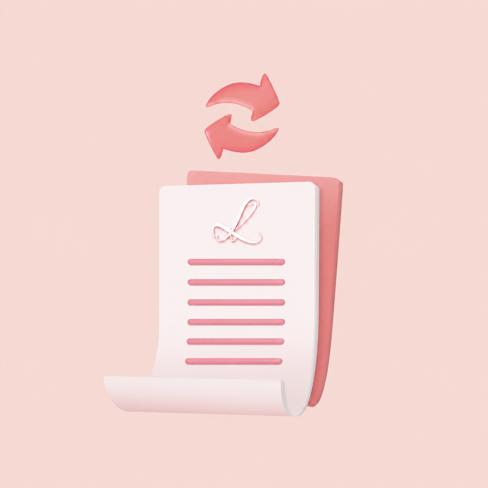
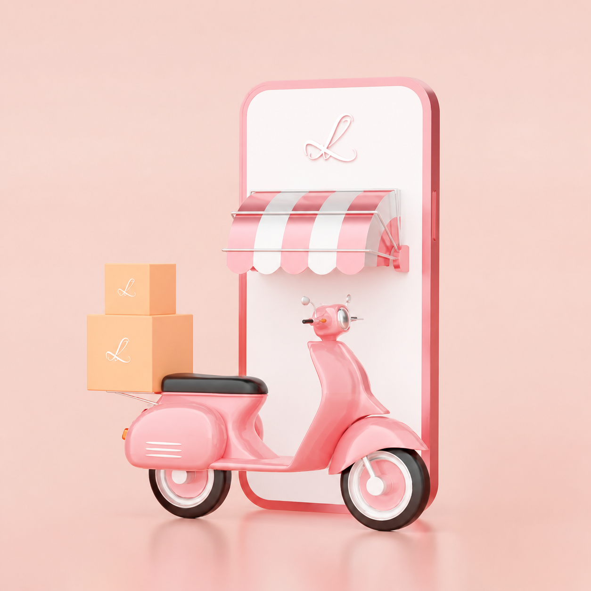
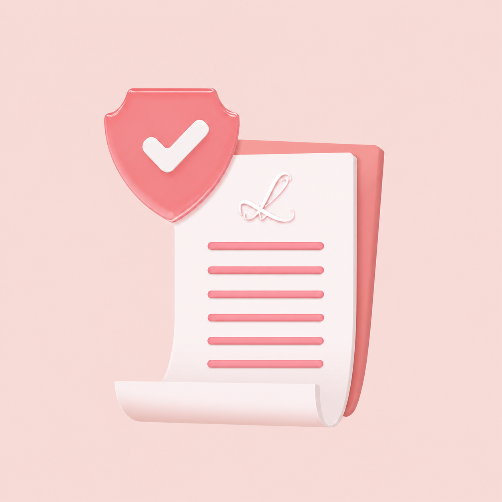

Tổng hợp chính sách LLT Jewelry

Quy định thanh toán
Hướng dẫn chi tiết về các hình thức giao dịch tài chính an toàn và minh bạch tại hệ thống.

Chính sách thu đổi
Quy trình thu mua và đổi sản phẩm với tỷ lệ giá trị tối ưu cho khách hàng.

Chính sách giao hàng
Thông tin chi tiết về phí vận chuyển, thời gian giao nhận và các cam kết bảo hiểm hàng hóa.

Chính sách bảo hành
Cam kết chất lượng trọn đời với các dịch vụ làm mới, đánh bóng và sửa chữa chuyên nghiệp.
Hướng dẫn sử dụng và bảo quản
Bí quyết giữ gìn vẻ đẹp vĩnh cửu và độ sáng bóng cho trang sức của bạn.
← Quay lại danh sách